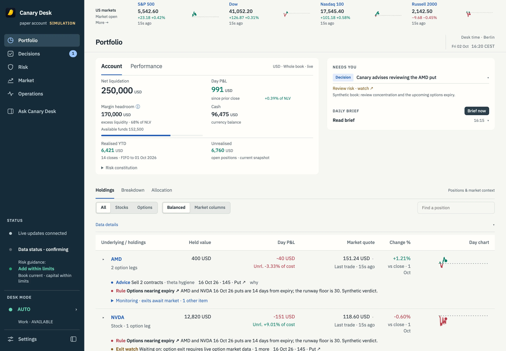
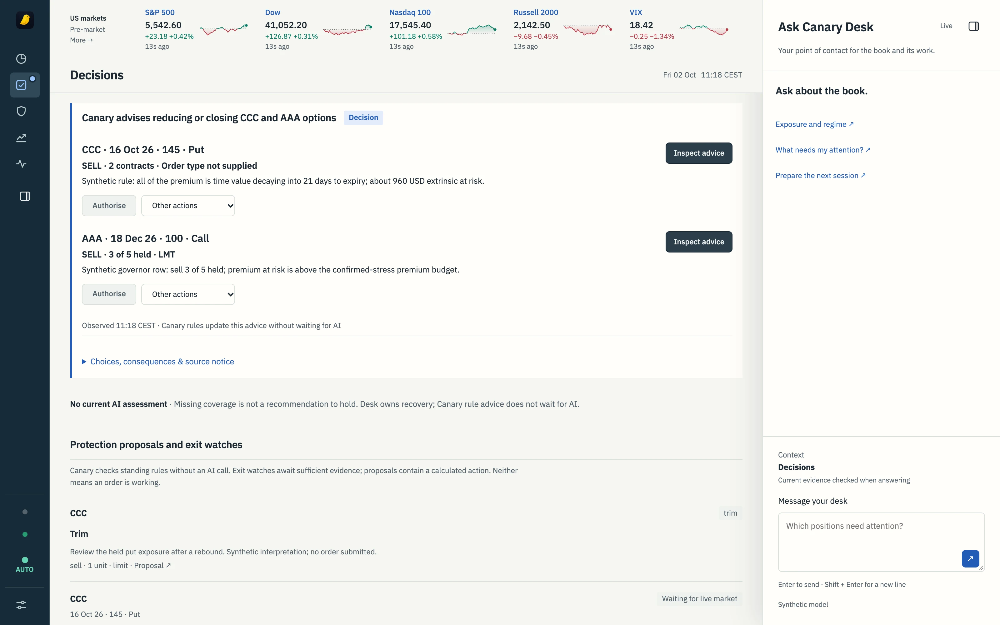

Before the open
A written brief each morning: how your book did the day before, and what needs your attention today.
Private preview
Your portfolio, understood before the day begins and protected while you’re away. It places the orders you have pre-authorised, within limits you set, and asks you about everything else.
Ask about a private preview
A written brief each morning: how your book did the day before, and what needs your attention today.
Your risk rules check the book every minute, whether you’re watching or not. When one trips, it drafts the fix: a stop, an exit, a hedge or a budget cut.
Stops and loss exits you have pre-authorised go out on their own, so the book stays protected when you’re not at the screen.
Cash above your buffer buys short-dated government bills in the same currency, spread across maturities. When cash falls below the buffer, the nearest bill is sold. Matured bills return to cash.
From analysis to an order
Each proposal carries its sources and its reason. Stops, exits, budget cuts and the cash sweep can be pre-authorised. Hedges and everything else wait for your tap, or a queue for the open.
The AI analyst proposes but never sends. Every order passes Canary’s checks.

Full features
An invitation
I run my own portfolio on Canary Desk. I’m opening it to a few traders, small desks and family offices who want to try it and compare notes.
Product sheet
Three A4 pages: what it does, a day with it, and every feature.
Download the product sheetRuns on your Mac, with your Interactive Brokers account and your AI provider. Built on Canary CLI, its open-source foundation. I arrange access over LinkedIn.